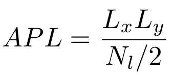
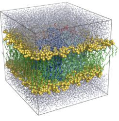
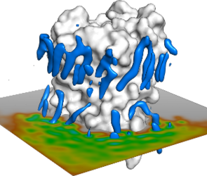

Today we will consider a small patch of patch of dipalmitoylphosphatidylcholine (DPPC) lipids, with the OPLS-AA force-field, from the Oxford lipidbook.
Download the necessary files by right clicking here. When prompted, save the file in the Desktop directory.
Open a terminal, go to the Desktop directory, and unzip the downloaded file:
cd ~/Desktopls -lhrt *zip
unzip dppc_files.zip
Have a look at the structure using pymol:
pymol system+ions.pdb
You will see the lipids arranged in two layers. Highlight the headgroup atoms by typing in the pymol console
show spheres, name C1+C2+C3+C4+C5+C6+O7+P8+O9+O10+O11
Question: How do lipids arrange? which lipid parts are exposed to the water molecules?
In the linux terminal, after closing pymol, execute the command to generate the tpr file
gmx grompp -f run.mdp -p topol.top -c system+ions.pdb -maxwarn 1
Now run the simulation by executing the command
gmx mdrun -s topol.tpr -v
This is a 400 ns simulation. Its duration will depend on the computer configuration, but in any case it will take too long for the tutorial. Cancel the simulation by typing
ctrl+c
For the following analysis, download the trajectory (positions printed every half a nanosecond): and the energy file (containing global information of the simulation every picosecond): xtc files.
First, look at the trajectory with pymol:
pymol system+ions.pdb
and in the pymol console:
load run.xtc, system+ions,
The bonds crossing over the periodic boundaries make difficult to visualize the trajectory. Let us to concentrate on the bilayer by typing in the pymol console
hide show sticks, resn DPPC
Play around with the visualization, orientation, and frame rate to get a visual idea of the dynamics of the bilayer.
Question: What can you say about the dynamics of the lipids? how do they pack in the bilayer? can you say something about the nature of the interactions of the head groups with the water molecules?
B. Analysis of a lipid bilayer simulation
Let us now do a quantitative analysis of the simulation.
1. Area per lipid
First, compute the lateral area per lipid molecule. Compute the lateral area of the simulation box by executing in the linux terminal
gmx traj -f run.xtc -s system+ions.pdb -ob
When prompted, select System, and press enter. Then, look which file was created:
ls -lhrt
Look at the changes in box size with xmgrace
xmgrace -block box.xvg -bxy 1:2 -bxy 1:3 -bxy 1:4
Question: Why do the box dimensions change with time? Do the changes reflect a converged trajectory?
We can estimate the area per lipid as the lateral area divided by the number of lipids per leaflet:

Question: Why is the denominator divided by two?
The number of DPPC lipids appears in the "molecules" section of the topology file:
more topol.top
The energy.xvg is a simple ascii file, which you can access and manipulate with simple scripts. The following somewhat complicated line removes the header of such file (lines starting with # and @) and prints the area per lipid as a function of time. Replace the variable Nl by the number of lipids found in the topoloty and execute the command:
grep -v \# box.xvg | grep -v \@ | awk ' {Nl=XXX ; t=$1 ; lx=$2 ; ly=$3 ; print t, lx*ly/(Nl/2)} ' > apl.dat
Now look at the resulting apl.dat file with xmgrace
xmgrace apl.dat
Question: How does the APL compare with the experimental value for DPPC at 320 K (0.63 nm2)?.
2. Bilayer thickness
To compute the bilayer thickness run the command:
gmx density -f run.xtc -s topol.tpr -center
Select the DPPC group when prompted (both for centering and for density calculation). Display the density with xmgrace
xmgrace density.xvg
Question: What is the bilayer thickness and how does it compare with the head-to-head experimental distance of DHH=38.7 Angstrom?
3. Order parameter
We will monitor the ordering of the lipids. Have a visual inspection again onto the trajectory and try to judge the level of ordering of the acyl-chains.
Question: How do the lipids look? ordered or disordered?
As you may realize, only by visual inspection, it is a very hard to determine the degree of ordering. We will compute the Deuterium order parameter which tell us how the lipids in average orient with respect to certain arbitrary axis (normal to the plane in our case). Let us first create an index file for one of the two acyl chains. Each carbon atom should be in a separate group and default index groups must be deleted. Copy and paste the entire following command:
{
echo a C17
echo a C18
echo a C19
echo a C20
echo a C21
echo a C22
echo a C23
echo a C24
echo a C25
echo a C26
echo a C27
echo a C28
echo a C29
echo a C30
echo a C31
echo del 0-12
echo q
} | gmx make_ndx -f system+ions.pdb -o sn1.ndx
Compute the order parameters by running for this chain by running the command
gmx order -f run.xtc -s topol.tpr -n sn1.ndx -od deuter_sn1.xvg
Repeat this process for the second acyl chain (sn2) whose atoms are C32,...,C50, paying attention to the name of the index file and the deuter_xxx.xvg files. At the end you should have two files: deuter_sn1.xvg and deuter_sn2.xvg. Plot them with xmgrace:
xmgrace deuter_sn1.xvg deuter_sn2.xvg
Question: Which parts of the acyl chain are more ordered and which ones more disordered?
4. Lipid difussion
We will finally consider a dynamic quantity, namely the diffusion coefficient of lipids. To compute type:
gmx msd -f run.xtc -s topol.tpr -beginfit 1000 -endfit 10000 -trestart 10000 -lateral z
When prompted, select the DPPC group..
Plot the mean square displacement versus time:
xmgrace msd.xvg
Zoom to the time window, considered for the fitting (0 to 10000 ps). Use the zoom button at the up-left xmgrace menu for this purpose.
Question: Which type of diffusive behavior do the lipids display at that given time scale (sub-diffusive, diffusive or super-diffusive)?.
Question: The slope of this curve is related to the diffusion coefficient. How does the estimated value compares with the experimental diffusion coefficient for this lipid at 320 K (Dexp~1.5x10-7 cm2/s)?
Question: What is the origin of the discrepancies between the simulation and the experimental value?
Question: What change in conformation (area per lipid and thickness), ordering, and dynamics (diffusion coefficient) is expected if the temperature is reduced?

C. Setup of a membrane protein simulation
Now, we will setup an MD simulation of a membrane protein. We will consider an aquaporin, a class of membrane proteins which facilitate the permeation of water and other solutes through biological lipid bilayers in response to osmotic pressure. We will consider aquaporin-0, the most abundant protein in our eye lense.
Please go to the protein data bank, search the structure with PDB code 2B6O. Download the structure, by clicking on the "Download Files" button at the right side. Select "PDB Format" and save the file in the Desktop directory. Look at the protein with pymol
pymol 2b6o.pdb
Question: Which molecules do you see in the structure?
We will remove the surrounding lipid molecules (residue name MC3) and leave only the protein and the water molecules (residue name HOH). To do so, we execute the command:
grep -v MC3 2b6o.pdb > monomer+HOH.pdb
We have to model missing atoms or residues. This information is contained in the MISSING RESIDUES and MISSING ATOMS section of the pdb file. In the case of aquaporin-0, the OG atom of SER6 is missing. We can create this atom by using pymol:
pymol monomer+HOH.pdb
In the pymol console
hide
show sticks, resi 6
Follow the instructions given by the tutor to create the atom by using the "Builder" utility of pymol. Once the atom has been added, save the molecule with File->Save Molecule->OK. When prompted, write the output file name (monomer_complete) and click "save".
Last thing to do is to change the name of the modified atoms from pymol to GROMACS format:
sed 's/O01/OG /g' monomer_complete.pdb > tmpsed 's/C01/CB /g' tmp > monomer_complete.pdb
Aquaporins arrange as tetramers, with identical monomeric units. We will generate the tetramer by applying symmetric rotation and translation operations to the monomer. First, let us translate the monomer in the x-axis by an amount equalling the crystallographic box:
grep CRYST1 2b6o.pdb gmx editconf -f monomer_complete.pdb -translate -6.5500 0 0 -o monomer_complete_trans.pdb -label "A"
Now will apply the rotations. We will rotate the monomer by 90°, -90°, and 180° around the z-axis:
gmx editconf -f monomer_complete_trans.pdb -rotate 0 0 90 -o mon_90.pdb -label "B"
gmx editconf -f monomer_complete_trans.pdb -rotate 0 0 -90 -o mon_-90.pdb -label "C"
gmx editconf -f monomer_complete_trans.pdb -rotate 0 0 180 -o mon_180.pdb -label "D"
We concatenate the four monomers into a single pdb file, saving as well the box size, and reordering protein atoms first and water atoms later:
{
grep CRYST1 2b6o.pdb
grep ATOM monomer_complete_trans.pdb
grep ATOM mon_90.pdb
grep ATOM mon_-90.pdb
grep ATOM mon_180.pdb
grep HETATM monomer_complete_trans.pdb
grep HETATM mon_90.pdb
grep HETATM mon_-90.pdb
grep HETATM mon_180.pdb
}> tetramer.pdb
Look at the tetramer with pymol
pymol tetramer.pdb
Now we will generate the topology of the protein with pdb2gmx:
gmx pdb2gmx -f tetramer.pdb -ignh -ter -his
Select:
- OPLS-AA/L force field
- tip4p water model
Select the protonation state of each histidine (-his option), based on the following list:
- HIS36: NE2
- HIS57: ND1
- HIS62: NE2
- HIS118: NE2
- HIS168: ND1
- HIS197: ND1
Select "NH2" for the N-terminus and COOH for the C-terminus.
Because pdb2gmx will prompt this information for each monomer, it is better to create a list with all the selections, copy that list four times and pass it to pdb2gmx:
cat>tmp2<< EOF 1 1 EOF cat>tmpmon<< EOF 1 0 1 1 0 0 2 2 EOF cat tmp2 tmpmon tmpmon tmpmon tmpmon > tmplist gmx pdb2gmx -f tetramer.pdb -ignh -ter -his < tmplist
List the created files with
ls -lhrt
Download an equilibrated patch of DMPC lipids here and visualize it with pymol
pymol dmpc_opls_patch_391_lipids.pdb
Center the protein in the middle of the bilayer. Compute the center of mass of the bilayer:
gmx traj -f dmpc_opls_patch_391_lipids.pdb -s dmpc_opls_patch_391_lipids.pdb -ox -com
Select the DMP group. Center of mass will appear in the last line of the coord.xvg file. Look at it:
tail -n 1 coord.xvg
The 2nd, 3th, and 4th column are the center of mass coordinates of the bilayer. Use these three numbers, as COMx, COMy, and COMz in the following command, to center the tetramer:
gmx editconf -f conf.gro -center COMx COMy COMz -o conf_centered.pdb
Now merge the tetramer, crystallographic waters, and lipids onto a single pdb file:
{
grep CRYST1 dmpc_opls_patch_391_lipids.pdb
grep ATOM conf_centered.pdb
grep ATOM dmpc_opls_patch_391_lipids.pdb
} > tet_patch_clashing.pdb
Visualize the resulting pdb with pymol
pymol tet_patch_clashing.pdb
Here, many lipids are clashing with the protein. We have to remove them. This will be achieved by deinflating the protein, letting it gradually grow until it recovers its original size, and allowing the lipids to accommodate during this growing process. This method has been proposed by Yesylevskyy in ProtSqueeze and later implemented in GROMACS as g_membed.
Download the topology of the DMPC lipids here. Save the file in the Desktop directory and uncompress it
unzip dmpc_opls.zip
Allow to overwrite the ff.oplsa directory, by selecting the option [A]ll.
Now the topology file has to be modified: lipids and solvating water molecules must be included and for g_membed, crystallographic water molecules must be distinguished from the other water molecules. A topology file has been prepared with all these modifications. Download the top file here.
We also need a special parameter file for membed, in which the interactions of the protein with itself are cancelled. You can download this mdp file here.
Now create an index file, defining a group named PROTEIN_GMEMBED, which contains the protein and the crystallographic waters (group named HO4):
gmx make_ndx -f tet_patch_clashing.pdb
In the make_ndx console: merge the Protein group with the HO4 group, change the name of the created group to PROTEIN_GMEMBED (group number 18, but it may change), and "q" to save and quit:
"Protein" | "HO4"
name 18 PROTEIN_GMEMBED
q
Now obtain the tpr file by running grompp:
gmx grompp -f g_membed.mdp -p topol_membed.top -c tet_patch_clashing.pdb -n index.ndx -o membed.tpr -maxwarn 1
Download the file with the options for membed: membed.dat. Run the simulation afterwards:
echo PROTEIN_GMEMBED DMP | gmx mdrun -membed membed.dat -s membed.tpr -mn index.ndx -v -c confout.pdb
Visualize the last snapshot of the membed step with pymol:
pymol confout.pdb
In the pymol console, load the membed trajectory, to see the inflation process:
hide lines, resn SOL
load traj_comp.xtc, confout
The last command may take a while until all snapshots are loaded. Press the play button and monitor.
The number of lipid and water molecules in the topology after membed has to be updated. Count the number of lipids and non-crystallographic water molecules:
cp topol_membed.top topol.top
grep -c P8 confout.pdb # number of lipids
grep -v HOH confout.pdb | grep -c OW # number of non-crystallographic water molecules
Open topol.top with a text editor and update the number of lipids (DMP) and water molecules (SOL):
gedit topol.top
Last thing to do is to neutralize the system by adding ions. Download a the following mdp file for energy minimization, em.mdp, and execute grompp
gmx grompp -f em.mdp -c confout.pdb -p topol.top -o tmp.tpr
Let us also add 150 mM of Sodium and Chloride ions. Water is at 55.5 M. Thus we have to add one ion every 370 water molecules to achieve a concentration of 150 mM. Count the total number of water molecules:
grep -c OW confout.pdb
Determine the resulting number of ions corresponding to 150 mM: Nions.
Update the index group SOL with only the solvent water molecules (residue SOL) discarding crystallographic waters (residue HOH):
gmx make_ndx -f confout.pdb
selecting the following options in the make_ndx menu:
del number #of SOL group
r SOL
q
Run genion, selecting the group SOL:
gmx genion -s tmp.tpr -neutral -np Nions -nn Nions -p topol.top -o system_neutral.gro -n index.ndx
Energy minimize the system:
gmx grompp -f em.mdp -p topol.top -c system_neutral.gro -o em.tpr
gmx mdrun -deffnm em -v
We should equilibrate the solvent (lipids, waters, and ions) around the protein, maintaining the protein position restrained. We will skip this step and the subsequent production run and continue with a preexisting MD trajectory in the following analysis.
Go back to Contents
D. Analysis of a membrane protein simulation
Download the following compressed file, containing an MD simulation of AQP0 together with a reference initial conformation: aqp0_md_traj.zip. Unzip the file
Visually inspect the trajectory with pymol:
pymol conf_0ns.pdb
In the pymol console:
load traj.xtc, conf_0ns
hide
show lines, poly
show spheres, name P8
Click on one lipid near the protein and one far away. They will constitute the "sele" group at the right side. Now change their representation:
show lines, sele
It is probably easier to see the lipids, hiding the P8 atom spheres:
hide spheres, name P8
Question: What can you say about the dynamics of the protein and the lipids?
1. Permeation of water
Aquaporins are water channels, facilitating the permeation of water and other small solutes through biological membranes, in response to osmotic pressure. Let us examine the permeation of water. Load the trajectory with vmd:
vmd conf_0ns.pdb traj_fitted.xtc
In the VMD Main window:
Click Graphic->Representations
Replace "all" by "resname SOL and within 4 of protein" in the "Selected Atoms"
Select VDW as Drawing method
Click on "Trajectory"
Turn on "Update Selection Every Frame"
Click on "Create Rep"
Replace "resname SOL and within 4 of protein" by "resid 62 64 180 183"
Select Licorice as Drawing method
In the VMD Main window pres play, adjusting the speed
In the Molecule display, play with the orientation and zoom
Question: how many water pathways can you identify?
Question: How would you describe the water passage through each one of these paths?
Question: What is the advantage to allow the water permeation in a single-file fashion?
Question: We selected key residues at the pore of each aquaporin tetramer. From the trajectory, could you imagine how these residues facilitate the water conduction through such narrow pores? HINT: look whether hydrogen bonds may be formed between these residues and water.
Under equilibrium conditions, the net flux of water is zero. However, water molecules by sometimes manage to diffuse trhough the pore. Highlight two water molecules to evidence this. In the vmd Graphical Representations window:
Click on the First representation of the list to highlight it.
Click on "Create Rep". In the created representation change the Selected Atoms to "resid 525 9370"
For that representation, choose VDW as Drawing Method
Aquaporin-0 is a poorly conducting channel. There are other aquaporins which exhibit a more high water permeability, while still maintaing strict control on the substances that cross. For a detail analysis of the permeation of water through aquaporins we recomend to read the literature below and to follow the tutorial developed by Prof. Bert de Groot in Göttingen found here.
 2. Localization of lipids around membrane proteins
Aquaporin-0 has a unique feature. It has been possible to crystallize it with a complete layer of lipids around it. Therefore it is an ideal system to study lipid-protein interactions. Let us check how the lipids accommodate around the protein. Create an index group with the C40 atoms (located in the middle of the one of the acyl chains) and split that group into residues:
gmx make_ndx -f conf_0ns.pdb
> a C40
> splitres XXX ; XXX is the number of the C40 created group
> press "Enter" key
> q
Scroll up through the output of the last command and remember the number of the first and last created groups (e.g. C40_DMPC_236: 23 and C40_DMPC_523: 310).
Compute the minimum distance between the protein and each of the C40 atoms, by replacing the number of these groups here:
{
echo 1
for i in {23..310}
do
echo $i
done
} | gmx mindist -f traj.xtc -s conf_0ns.pdb -n index.ndx -od -ng 288 -xvg none
Open the result with xmgrace:
xmgrace -nxy mindist.xvg
You will see the minimum distance of each C40 atom to the protein as a function of time.
Let us compute a histogram. In xmgrace:
Click Edit->Arrange graphs
Change Cols: 2
Click Apply
Click Close
Click Data->Data set operations
In the new window, right click pressed on G0.S0[2][201]-> Selector operations -> Select All
Change Operation type from "Sort" to "Join"
Click "Apply"
Click "Close"
Click Data->Transformations->Histograms
At the left (Source), click on Set: G0.S0[2][57888]
Right click pressed on that set and then -> "Hide"
At the right (Destination), select Graph G1(0 sets)
Activate option "Normalize"
Set Start at: 0
Set Stop at: 5
Set # of bins 100
Click Apply
Click Close
Click on the right-hand side graph
Click "As" button at the left menu
You will see the distance distribution of the C40 atom ortogonal to the protein. This distance is related with the localization of the acyl-chains around the protein
Question: At which distance from the protein is the first layer of lipids located?
Question: Up to which layer is there a degree of localization?
Question: Why the distribution decreases for increasing distances?
Question: How do you think this distribution will change if an atom of the lipid head-group instead of the acyl-chains is considered?
We can also compute the 2D density. To do that, we have to remove the rotation and translation of the protein:
gmx trjconv -f traj.xtc -s conf_0ns.pdb -fit rot+trans -o traj_fitted.xtc
> Backbone ; group for least-square fitting
> System ; group for output
Execute the following command:
gmx densmap -f traj_fitted.xtc -s conf_0ns.pdb -n index.ndx -bin 0.05
> C40 ; Select the group of C40 atoms
densmap creates an xpm file. Convert this file to eps format by running:
gmx xpm2ps -f densmap.xpm -o densmap.eps
Visualize the map with okular:
evince densmap.eps
Question: How do the lipids localize tangentially around the protein?
Question: Why are there regions of high-lipid density near the protein?
Question: What happens with the lipids far away from the protein?
Question: The Cryo-EM structure of aquaporin-0 revealed the position of several surrounding lipids (remember the first step in which we removed the lipids from the crystallographic structure). How do the lipid positions in the structure compare to the average positions you observed in the simulations? HINT: identify the protein surface residues near the high lipid density, looking at the 2D density plot and the trajectory.
Further references and advanced reading:
Simulation of biological membranes: